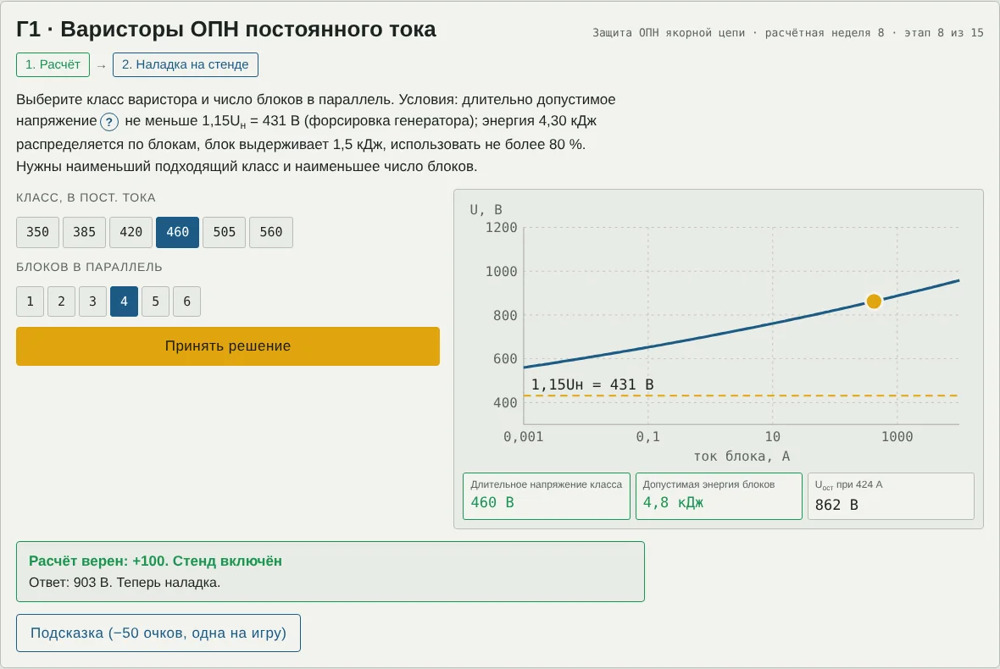

Техника высоких напряжений
Методические указания для студентов
Изоляция привода подъёма ЭКГ-10
Деловая игра по сквозному заданию, вариант 2, недели 1–15
Цель занятия. Закрепить расчёты 15 недель задания на одном объекте — главном приводе подъёма экскаватора ЭКГ-10 по системе Г-Д — и научиться принимать по ним решения: выбирать толщины, материалы, номиналы и режимы так, чтобы изоляция работала с запасом в условиях карьера. Что понадобится: компьютер или телефон с браузером, калькулятор с натуральным логарифмом и степенями, эти указания. Ссылку на игру выдаёт преподаватель. Продолжительность: 60–90 минут; прогресс сохраняется в браузере. |
1. Объект: привод подъёма ЭКГ-10
Сеть 6 кВ через приключательный пункт и гибкий кабель питает сетевой двигатель агрегата Г-Д и трансформатор собственных нужд. Генератор питает якоря двух двигателей подъёма (2 × 270 кВт); его возбуждение регулирует тиристорный возбудитель через обмотку возбуждения генератора, при аварии поле гасится на разрядный резистор. Якорная цепь не заземлена: её изоляцию относительно корпуса контролирует реле РКИ, а варисторный ОПН, включённый между полюсами «+» и «−», ограничивает перенапряжения при отключении тока. В игре шесть узлов, они открываются по порядку недель.
 → якорная цепь с QF и ОПН → двигатель подъёма и ковш; ТСН 6/0,4 кВ; узлы «Нагрев» и «Диагностика»")
Рис. 1. Мнемосхема ЭКГ-10 после прохождения всех этапов: сеть 6 кВ → приключательный пункт ЯКНО-6 → агрегат Г-Д (СД и генератор, ТВ, обмотка возбуждения с разрядным резистором) → якорная цепь с QF и ОПН → двигатель подъёма и ковш; ТСН 6/0,4 кВ; узлы «Нагрев» и «Диагностика»
| Узел | Этапы | Что выбирается на стенде |
|---|---|---|
| Двигатели подъёма | А1–А3 | толщина изоляции; кратность токоограничения; материал изоляторов |
| Трансформатор СН 6/0,4 кВ | Б1–Б2 | положение барьера; решение по пробе масла |
| Агрегат Г-Д | В1–В2 | где возникают ЧР; разрядный резистор |
| Защита ОПН якорной цепи | Г1–Г2 | класс и число варисторов; вид защиты |
| Тепловой режим | Д1–Д2 | ток копания; источник нагрева |
| Диагностика и сервис | Е1–Е4 | подогреватель; решения по машинам; испытательное напряжение; ток сушки |
2. Правила игры
Нажмите на аппарат на схеме или на карточку узла под ней — откроется справка: что это за аппарат и что на нём считают. Значок «?» в тексте задания поясняет термин и бесплатен.
Каждый из 15 этапов состоит из двух шагов: расчёт (ввести число) и решение на интерактивном стенде. Всего 30 проверок.
Числовой ответ принимается с допуском ±3 %; дробную часть можно отделять запятой или точкой.
«Жизни» — мегаомметр в углу экрана: каждая ошибка снижает сопротивление изоляции якоря (500 → 100 → 20 → 4 → 1 → 0,4 МОм), шестая — пробой на корпус, игра начинается заново. Три верных ответа подряд с первой попытки «подсушивают» изоляцию — стрелка возвращается на деление.
Очки: верно с первой попытки — 100, после ошибки — 50; подсказка (одна на игру) снимает 50. Максимум — 3000.
На стенде зелёные показания — условие выполнено, красные — нет. Часто нужно наименьшее или наибольшее подходящее значение — читайте задание до конца.
После последнего этапа нажмите «Пуск», затем «Скопировать итог» и отправьте текст преподавателю.

Рис. 2. Пример стенда: этап Г1, выбор варисторов. Слева — переключатели и кнопка «Принять решение», справа — ВАХ блока и показания
3. Порядок работы на этапе
Прочитайте «Дано» и пояснение, выпишите формулы.
Выполните расчёт, следите за единицами и за тем, где нужна амплитуда, а где действующее значение. Запишите ответ в бланк.
Введите ответ в игре. Ошиблись — проверьте единицы и порядок действий.
На стенде сначала оцените решение расчётом, затем подтвердите его. Запишите решение в бланк.
4. Этапы
Двигатели подъёма
Два двигателя постоянного тока независимого возбуждения по 270 кВт, 450 об/мин, ПВн = 80 % (учебник Фащиленко, табл. 4.2). Расчёт ведём для одного двигателя: Uн = 375 В, Iн = 770 А; двигатели некомпенсированные, класс нагревостойкости H. Три этапа: корпусная изоляция якоря, межламельное напряжение, изоляция щёткодержателей.
А1 · Корпусная изоляция якоря (неделя 1)
Дано. Uн = 375 В. Заводское испытание корпусной изоляции якоря: Uисп = 2Uн + 1000 В (действующее, 50 Гц, 1 мин). Кратковременная прочность микаленты Eпр = 20 кВ/мм (амплитуда), коэффициент запаса kз = 4. Ряд толщин: 0,3; 0,4; 0,5; 0,6; 0,8; 1,0 мм.
Пояснение. Корпусную изоляцию рассчитывают по заводскому испытательному напряжению: оно выше рабочего и самое тяжёлое для новой машины. Запас kз учитывает старение, вибрацию и загрязнение. Толстая изоляция хуже отводит тепло из паза и отнимает место у меди. В эксплуатации испытывают меньшим напряжением — по ПУЭ.
(1)
(2)
(3)
Расчёт. Найти: наименьшая толщина корпусной изоляции, мм.
Решение на стенде. Выбрать из ряда толщину, при которой поле при заводском испытании не больше Eпр/kз = 5 кВ/мм, а изоляция как можно тоньше.
Ответ: расчёт ____________ мм; решение ______________________
А2 · Межламельное напряжение (неделя 2)
Дано. 2p = 4; число коллекторных пластин K = 150; расчётный коэффициент полюсного перекрытия α = 0,65; машина без компенсационной обмотки — искажение поля реакцией якоря учитывает множитель (1 + 0,35·I/Iн). Предел emax = 30 В. Ряд кратностей токоограничения: 2,0; 2,2; 2,5; 3,0 (рекомендуется Mст = (2…2,5)Mн, учебник Фащиленко, табл. 4.4).
Пояснение. Напряжение между соседними пластинами — это ЭДС вращения секции. При стопоре скорость равна нулю, и ЭДС вращения нет: между пластинами остаётся только падение напряжения в обмотке. В Г-Д при стопоре ЭДС генератора Eг = IстRя (учебник Фащиленко, ф. 4.83) — всего десятки вольт. Опасен наброс большого тока на номинальной скорости: реакция якоря сгущает поле под краем полюса, межламельное напряжение растёт, и по загрязнённому коллектору может пойти круговой огонь. Форсировка генератора поднимает напряжение до 1,1Uн.
(4)
(5)
(6)
Расчёт. Найти: emax при набросе тока 2,5Iн на номинальной скорости, U = Uн, В.
Решение на стенде. Выбрать наибольшую кратность kстоп из ряда, при которой emax при форсировке 1,1Uн не превышает 30 В.
Ответ: расчёт ____________ В; решение ______________________
А3 · Щёткодержатели: зазор и путь утечки (неделя 3)
Дано. Зазор между пальцем щёткодержателя (375 В) и траверсой 3 мм, поле близко к однородному; воздух, 760 мм рт. ст. Постоянные Пашена воздуха A = 15, B = 365, γ = 0,01. Изоляторы пальцев: путь утечки 5,5 мм, рёбра не помещаются. Степень загрязнения 3. ГОСТ Р МЭК 60664.1, строка 400 В: группа I — 5,0 мм; II — 5,6 мм; IIIa и IIIb — 6,3 мм. Материалы: гетинакс (CTI 150), стеклотекстолит СТЭФ (CTI 200), стеклотекстолит с трекингостойким покрытием (CTI 400), пресс-материал ДСВ (CTI 600).
Пояснение. Чтобы возникла корона, нужно поле порядка десятков киловольт на сантиметр у электрода — при 375 В в миллиметровых зазорах её нет. Минимум Пашена воздуха около 300 В достигается лишь при pd ≈ 0,6…0,8 мм рт. ст.·см, то есть в микронных зазорах. В запылённой машине опасен трекинг: по слою угольной и рудной пыли с конденсатом течёт ток, поверхность обугливается, образуется проводящая дорожка. Стойкость материала к трекингу — сравнительный индекс трекингостойкости CTI; от группы материала зависит требуемый путь утечки.
(7)
Расчёт. Найти: пробивное напряжение зазора 3 мм по формуле Пашена, кВ.
Решение на стенде. Выбрать материал изолятора, при котором пути утечки 5,5 мм достаточно.
Ответ: расчёт ____________ кВ; решение ______________________
Трансформатор СН 6/0,4 кВ
Масляный трансформатор собственных нужд 160 кВ·А питает тиристорный возбудитель и вспомогательные приводы. Два этапа: поле у вывода 6 кВ с картонным барьером и влага в масле.
Б1 · Маслобарьерная изоляция вывода (неделя 4)
Дано. Вывод 6 кВ в баке — коаксиальная система: r0 = 10 мм, R = 60 мм; цилиндр из электрокартона rx = 25 мм, δ = 4 мм; εмасла = 2,2, εкартона = 4,4. Заводское испытание 25 кВ, 50 Гц (при вводе в работу 22,5 кВ, ПУЭ, табл. 1.8.11).
Пояснение. В слоистой коаксиальной изоляции заряд на единицу длины одинаков во всех слоях, поэтому E = q/(2πε0εir): в слое с большей ε поле меньше, и на масло приходится большая часть напряжения. Поэтому картон электростатически поле у вывода не снижает. Выигрыш барьера — барьерный эффект: заряды и волокна оседают на картоне, мостики не замыкают промежуток. По рис. 1.31 учебника Важова барьер действует сильнее всего на расстоянии (0,2…0,3)S от электрода с сильным полем.
(8)
(9)
(10)
Расчёт. Найти: наибольшая напряжённость в масле у вывода при испытании с барьером (амплитуда), кВ/мм.
Решение на стенде. Ползунком rx установить барьер в зону наибольшего барьерного эффекта.
Ответ: расчёт ____________ кВ/мм; решение ______________________
Б2 · Влага в масле и мостики (неделя 5)
Дано. Растворимость воды в минеральном масле (учебник Важова): при 80 °C — 400·10⁻⁶, при 20 °C — 40·10⁻⁶ по объёму. Проба масла в стандартном разряднике 2,5 мм: 17; 19; 22; 16; 20; 18 кВ. Нормы для аппаратов до 15 кВ: после заливки — не менее 25 кВ, в эксплуатации — не менее 20 кВ.
Пояснение. При остывании растворённая вода выпадает в эмульсию — самое опасное состояние. Капли (ε = 80) и волокна целлюлозы втягиваются в сильное поле, вытягиваются вдоль силовых линий и образуют мостики. Ток по мостику разогревает его до вскипания, в пузырьках начинается ионизация — так развивается пробой (учебник Важова, разд. 1.2.1.2). Барьер разрывает мостики, но воду не убирает.
(11)
(12)
Расчёт. Найти: доля растворённой воды, выпадающей в эмульсию при остывании с 80 до 20 °C, %.
Решение на стенде. По пробе масла выбрать решение.
Ответ: расчёт ____________ %; решение ______________________
Агрегат Г-Д
Сетевой двигатель 6 кВ, 800 кВт вращает генератор постоянного тока; генератор питает якорь двигателя подъёма, его поле регулирует тиристорный возбудитель. Два этапа: расслоение изоляции от вибрации и коммутационные перенапряжения.
В1 · Вибрация и расслоение изоляции (неделя 6)
Дано. Сетевой двигатель 6 кВ: пазовая изоляция δ = 2,2 мм, εr = 4,5; вибрация расслоила изоляцию, воздушный зазор d = 0,15 мм. Двигатель подъёма: изоляция 0,5 мм (этап А1), в работе до 1,15Uн = 431 В. Газ в зазоре — воздух при атмосферном давлении.
Пояснение. Зазор и оставшаяся изоляция — последовательные конденсаторы: в зазоре с ε = 1 поле в εr раз больше, чем в изоляции. Частичные разряды возникают, если напряжение на зазоре больше пробивного по кривой Пашена при pd = 760·d. Минимум Пашена воздуха около 300 В, поэтому в машинах до ≈ 0,5 кВ ЧР в работе практически невозможны: расслоение опасно другим — ухудшением теплоотвода и истиранием.
(13)
(14)
(15)
Расчёт. Найти: напряжение на зазоре расслоения d = 0,15 мм в изоляции СД, В.
Решение на стенде. Сравнить напряжение на зазоре с кривой Пашена для двух машин и указать, где расслоение 0,1…0,4 мм даёт ЧР в работе.
Ответ: расчёт ____________ В; решение ______________________
В2 · Отключение тока и гашение поля (неделя 7)
Дано. Индуктивность якорной цепи Г-Д L = 3 мГн; отключается стопорный ток 2,2Iн = 1694 А (решение этапа А2). Обмотка возбуждения генератора: Lв = 8 Гн, Rв = 10 Ом, Iв = 18 А, Uв = 180 В; испытательное напряжение обмотки 1,2 кВ (ПУЭ, табл. 1.8.6), запас 1,25. Разрядные резисторы: 20; 30; 50; 80; 100 Ом. Гашение поля — за время переходного процесса не более 0,75 с (учебник Фащиленко, разд. 4.6.2).
Пояснение. При разрыве цепи с индуктивностью энергия магнитного поля должна куда-то уйти: без ограничителя ток заряжает ёмкость обмоток на землю до I·√(L/C) — сотен киловольт, и изоляция пробивается. Поле генератора при аварии гасят на разрядный резистор: чем он больше, тем быстрее гашение, но тем выше напряжение на обмотке. Экспонента практически затухает за 3τ.
(16)
(17)
(18)
Расчёт. Найти: энергия в индуктивности якорной цепи при отключении стопорного тока, кДж.
Решение на стенде. Выбрать разрядный резистор: 3τ ≤ 0,75 с, IвRр не больше допустимого; из подходящих — с меньшим напряжением на обмотке.
Ответ: расчёт ____________ кДж; решение ______________________
Защита ОПН якорной цепи
Варисторный ограничитель перенапряжений на зажимах якоря. Два этапа: выбор варисторов и координация с вольт-секундной характеристикой изоляции.
Г1 · Варисторы ОПН постоянного тока (неделя 8)
Дано. ВАХ варистора U = U1мА·(I/1 мА)α, коэффициент нелинейности α = 1/30 ≈ 0,033 (учебник Важова, разд. 4: для ОПН α = 0,02…0,1). Классы, В пост. тока (U1мА, В): 350 (430), 385 (470), 420 (510), 460 (560), 505 (620), 560 (680). Энергия блока 1,5 кДж, использовать не более 80 %. Энергия якорной цепи 4,30 кДж (этап В2). Форсировка генератора до 1,15Uн.
Пояснение. Варистор почти не проводит при рабочем напряжении и резко открывается при перенапряжении. Его длительное напряжение должно быть не ниже наибольшего рабочего, иначе ток утечки греет блок до теплового пробоя. Остающееся напряжение растёт с током очень слабо — в степени 1/α. Блоки в параллель делят ток и энергию.
(19)
(20)
(21)
Расчёт. Найти: остающееся напряжение одного блока класса 460 В при токе 1694 А, В.
Решение на стенде. Выбрать наименьший подходящий класс и наименьшее число блоков в параллель.
Ответ: расчёт ____________ В; решение ______________________
Г2 · Координация с ВСХ изоляции (неделя 9)
Дано. Прочность изоляции якоря в эксплуатации — амплитуда испытательного напряжения по ПУЭ: √2·1,4 кВ. ОПН: 4 блока класса 460 В (этап Г1). Требуемый коэффициент защиты k ≥ 1,25 во всём диапазоне 1 мкс…10 мс. Альтернативы: без защиты; искровой разрядник 1,5 кВ; варисторы 350 В × 4.
Пояснение. Вольт-секундная характеристика (лекция 3) показывает, какое напряжение выдерживает промежуток при данной длительности воздействия. У изоляции она на коротких временах поднимается умеренно, у искрового разрядника — круто: при быстром фронте он срабатывает выше прочности изоляции. Варистор открывается за наносекунды, его остающееся напряжение от длительности почти не зависит.
(22)
(23)
Расчёт. Найти: коэффициент защиты для 4 блоков класса 460 В.
Решение на стенде. Выбрать защиту, обеспечивающую k ≥ 1,25 при всех длительностях и работающую без нагрева.
Ответ: расчёт ____________; решение ______________________
Тепловой режим
Режим S8 с пусками, реверсами и электрическим торможением, цикл копания 26 с. Два этапа: эквивалентный ток и источник нагрева изоляции.
Д1 · Эквивалентный ток цикла (неделя 10)
Дано. Цикл копания Tц = 26 с (учебник Фащиленко, табл. 4.1): стопорение 1 с при 2,2Iн; копание 6 с при 1,5Iн; подъём с поворотом 6 с при 0,8Iн; спуск порожнего ковша 7 с при 0,4Iн; пауза 6 с (разгрузка, ковш на тормозе). Вентиляция принудительная (β = 1). Номинальная ПВн = 80 %.
Пояснение. Нагрев обмоток определяется потерями в меди, пропорциональными I², поэтому нагрузку заменяют эквивалентным током (учебник Ильинского, разд. 7.4). Его считают по времени работы и приводят к номинальной ПВ двигателя (учебник Бекишева, пример 29; учебник Фащиленко, ф. 4.76–4.77). Двигатель выбран правильно, если Iэ ≤ Iн и ПВр ≤ ПВн.
(24)
(25)
(26)
Расчёт. Найти: эквивалентный ток, приведённый к ПВ 80 %, А.
Решение на стенде. Ползунком выбрать наибольший ток копания, при котором Iэ ≤ Iн.
Ответ: расчёт ____________ А; решение ______________________
Д2 · Что греет изоляцию за цикл (неделя 11)
Дано. Ток копания оставили 1,5Iн (Iэ = 1,058Iн, этап Д1). Перегрев при номинальном токе Δθн = 120 К. Правило 10 градусов: +10 К сокращают срок службы изоляции вдвое. Rя = 0,015 Ом; Rиз = 50 МОм.
Пояснение. Изоляцию греет медь: потери I²R в обмотке якоря и дополнительных полюсов. Диэлектрические потери на постоянном напряжении сводятся к току утечки и ничтожны. Срок службы изоляции экспоненциально зависит от температуры. Оценка Δθ ∝ Iэ² — с запасом: постоянные потери от тока не зависят.
(27)
(28)
(29)
Расчёт. Найти: оставшаяся доля ресурса изоляции при Iкоп = 1,5Iн, %.
Решение на стенде. Выбрать главный источник нагрева изоляции.
Ответ: расчёт ____________ %; решение ______________________
Диагностика и сервис
Обслуживание изоляции в карьере: конденсат, мегаомметр, испытания повышенным напряжением, сушка. Четыре этапа.
Е1 · Конденсат после ночной смены (неделя 12)
Дано. Ночью экскаватор стоял, обмотки остыли до +2 °C. Утром воздух t = 12 °C, φ = 85 %. Тепловое сопротивление двигателя без вентиляции 25 К/кВт. Подогрев должен держать обмотку на 5 К теплее воздуха. Ряд подогревателей: 0,1; 0,2; 0,3; 0,5; 1,0 кВт.
Пояснение. Если поверхность холоднее точки росы окружающего воздуха, на ней выпадает вода; в пыльной машине она образует проводящую плёнку, сопротивление изоляции падает в десятки раз. Стояночный подогрев держит обмотку теплее воздуха.
(30)
(31)
(32)
Расчёт. Найти: точка росы утреннего воздуха, °C.
Решение на стенде. Выбрать наименьший подогреватель из ряда.
Ответ: расчёт ____________ °C; решение ______________________
Е2 · Коэффициент абсорбции (неделя 13)
Дано. Измерения при 20 °C: двигатель подъёма — R15 = 0,30 МОм, R60 = 0,45 МОм; генератор — 3,1 и 3,4 МОм; сетевой двигатель 6 кВ — 600 и 1100 МОм. Нормы: Kабс ≥ 1,3; R60 ≥ 0,5 МОм для машин до 1 кВ (ПУЭ), ≥ UкВ + 1 = 7 МОм для обмотки 6 кВ (IEEE 43).
Пояснение. Сухая изоляция медленно поляризуется: ток абсорбции спадает, и сопротивление за минуту заметно растёт. У влажной изоляции велик ток сквозной проводимости, и R60 ≈ R15. Поэтому смотрят и на коэффициент абсорбции, и на абсолютное сопротивление.
(33)
(34)
Расчёт. Найти: коэффициент абсорбции генератора.
Решение на стенде. Принять решение по каждой машине: в работу или сушить.
Ответ: расчёт ____________; решение ______________________
Е3 · Испытание повышенным напряжением (неделя 14)
Дано. Сетевой двигатель 6 кВ, 800 кВт. ПУЭ, табл. 1.8.9: обмотка статора машин до 1 МВт — 1,6Uном + 0,8 кВ (50 Гц, 1 мин). Якорь ДПТ (табл. 1.8.6) — 1,6Uн + 0,8 кВ, не менее 1,2 кВ. Диагностика статора выпрямленным напряжением до 15,6 кВ ступенями: токи утечки при 7,8 и 15,6 кВ — фаза A 8 и 18 мкА; B 9 и 21 мкА; C 10 и 70 мкА. Ориентиры задания: Kн ≤ 3, асимметрия ≤ 2.
Пояснение. Заводское испытание 2Uн + 1 кВ проводят на новой машине; в эксплуатации напряжение снижают, чтобы не повредить состарившуюся изоляцию. У машины постоянного тока нет фаз, поэтому токи утечки по фазам сравнивают на статоре трёхфазного сетевого двигателя. Нелинейный рост тока с напряжением и различие фаз указывают на местный дефект.
(35)
(36)
(37)
Расчёт. Найти: испытательное напряжение обмотки статора сетевого двигателя по ПУЭ, кВ.
Решение на стенде. Выбрать испытательное напряжение якоря ДПТ и заключение по статору.
Ответ: расчёт ____________ кВ; решение ______________________
Е4 · Сушка обмоток током (неделя 15)
Дано. Сушка якорей ДПТ и генератора током от генератора при пониженном возбуждении. RΣ = 0,03 Ом; тепловое сопротивление агрегата при выключенной вентиляции 12,5 К/кВт; воздух 20 °C; температура сушки 100 ± 5 °C. Ток — от 0,4 до 0,8Iн.
Пояснение. Нагрев током удобен на месте: не нужна внешняя печь. Температуру поднимают ступенями, не быстрее 5…8 К/ч, чтобы влага выходила из толщи изоляции, а не образовывала пузыри. Сушку заканчивают, когда R60 стабильно 3…5 ч при постоянной температуре и Kабс ≥ 1,3; затем обмотки пропитывают лаком класса H и запекают.
(38)
(39)
Расчёт. Найти: мощность нагрева для сушки при 100 °C, кВт.
Решение на стенде. Ползунком выбрать ток сушки, при котором установившаяся температура 100 ± 5 °C.
Ответ: расчёт ____________ кВт; решение ______________________
5. Справочные данные
| Величина | Значение |
|---|---|
| √2; √3; e | 1,414; 1,732; 2,718 |
| ln ln(1 + 1/γ) при γ = 0,01 | 1,529 |
| pd для воздуха при 760 мм рт. ст. | 760·d, d в сантиметрах |
| Корень n-й степени | x1/n = e(ln x)/n |
| 1 мГн; 1 мкФ; 1 мкА | 10⁻³ Гн; 10⁻⁶ Ф; 10⁻⁶ А |
| Перевод температуры | T, К = t, °C + 273 |
6. Контрольные вопросы
(А1) Почему корпусную изоляцию нельзя делать «чем толще, тем лучше»?
(А2) Почему межламельное напряжение при стопоре мало, хотя ток наибольший?
(А3) Почему для низковольтной машины в карьере важнее трекингостойкость, чем электрическая прочность воздуха?
(Б1) Почему барьер с большей ε, чем у масла, всё же повышает прочность маслобарьерной изоляции?
(Б2) Почему ночные остановки опасны и для масла трансформатора?
(В1) Почему для двигателя на 375 В расслоение изоляции не приводит к ЧР, но всё равно опасно?
(В2) Почему нельзя просто разорвать цепь обмотки возбуждения?
(Г1) Чем опасен варистор со слишком низким длительным напряжением?
(Г2) Почему искровой разрядник плохо защищает от перенапряжений с крутым фронтом?
(Д1) Почему эквивалентный ток считают по квадратам токов?
(Д2) Как стопорные токи сокращают срок службы изоляции, если они её не нагружают по напряжению?
(Е1) Почему конденсат выпадает утром, а не ночью?
(Е2) Почему у увлажнённой изоляции коэффициент абсорбции близок к единице?
(Е3) Почему при местном дефекте сушка всех фаз не помогает?
(Е4) Почему сушку ведут медленным подъёмом температуры?
7. Отчёт и оценка
В отчёт входят: заполненный бланк, текст итога из игры и письменные ответы на три контрольных вопроса по выбору преподавателя.
| Очки (максимум 3000) | Оценка |
|---|---|
| 2700 и больше | «отлично» |
| 2250–2699 | «хорошо» |
| 1700–2249 | «удовлетворительно» |
| меньше 1700 или пробой | повторное прохождение |
Приложение. Бланк отчёта
ФИО ______________________________ Группа ________ Дата ________
| Этап | Что найти | Расчёт | Решение | Ошибок |
|---|---|---|---|---|
| А1 | Наименьшая толщина корпусной изоляции, мм | |||
| А2 | Emax при набросе тока 2,5Iн на номинальной скорости, U = Uн, В | |||
| А3 | Пробивное напряжение зазора 3 мм по формуле Пашена, кВ | |||
| Б1 | Наибольшая напряжённость в масле у вывода при испытании с барьером (амплитуда), кВ/мм | |||
| Б2 | Доля растворённой воды, выпадающей в эмульсию при остывании с 80 до 20 °C, % | |||
| В1 | Напряжение на зазоре расслоения d = 0,15 мм в изоляции СД, В | |||
| В2 | Энергия в индуктивности якорной цепи при отключении стопорного тока, кДж | |||
| Г1 | Остающееся напряжение одного блока класса 460 В при токе 1694 А, В | |||
| Г2 | Коэффициент защиты для 4 блоков класса 460 В | |||
| Д1 | Эквивалентный ток, приведённый к ПВ 80 %, А | |||
| Д2 | Оставшаяся доля ресурса изоляции при Iкоп = 1,5Iн, % | |||
| Е1 | Точка росы утреннего воздуха, °C | |||
| Е2 | Коэффициент абсорбции генератора | |||
| Е3 | Испытательное напряжение обмотки статора сетевого двигателя по ПУЭ, кВ | |||
| Е4 | Мощность нагрева для сушки при 100 °C, кВт |
Итог игры: очки ______ запас прочности ______ время ______ оценка ______